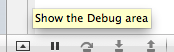
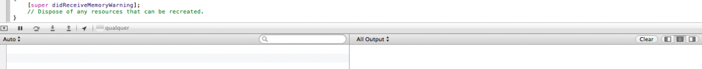

Objective-C: A Linguagem Por Trás Do iOS – Parte 1
Fala pessoal!
Este é segundo artigo, que faz parte da série sobre desenvolvimento para iOS que estou fazendo. Se você perdeu o primeiro post siga esse link http://flaviosilveira.com/2013/comece-a-programar-para-ios/ para acompanhar nossos passos desde o início.
Em nosso primeiro post criamos um projeto simples e entendemos a sua estrutura de pastas. Partindo desse ponto, vamos hoje conhecer um pouco da linguagem que vamos usar para desenvolver para iOS. É! XCode não é só arrastar e soltar, tem que codificar. E para isso usamos a linguagem Objective-C.
Rápida História
Você deve achar que o Objective-C não é tão antigo, já que não faz tanto tempo que temos pessoas com IPhones desfilando por aí não é mesmo? Mas não, o Objective-C está na área desde o início dos anos 80 e foi idealizado e criado pelo PHD em Matemática biológica Brad Cox e pelo (também) PHD em Ciência cognitiva Tom Love.
Como com esses títulos eles caíram na programação eu não sei, mas outros detalhes da história deles, de como eles estavam preocupados com a falta de reutilização de código em cima do Smaltalk dentro da ITT e de como eles começaram a criação de um processador em C para resolver esses problemas, você pode encontrar dando aquela rápida pesquisada no Google. Se você está com seu listening de inglês em dia você pode conferir o próprio Tom Love falando sobre o assunto nesse vídeo no Youtube http://youtu.be/adI6-liGXqE (Há outros vídeos e keynotes de Tom que você pode encontrar no youtube).
No vídeo, Love também comenta sobre como o Objective-C sobreviveu através dos anos até ele ser popularizado pela NeXT, empresa de Steve Jobs. A NeXT extendeu o GCC para compilar Objective-C e também criou as primeiras ferramentas de desenvolvimento para ele que vão evoluindo até chegar no XCode que temos em mãos hoje.
E aproveitando que comentei sobre o XCode, vale dizer que visto que o Objective-C é uma linguagem que já vem de algum tempo, você encontra vários compiladores para ela de modo que consiga estudar ela em separado. Mas como aqui vamos focar em IPhones, IPads e em ambiente Apple, nada melhor que o XCode na hora de te ajudar a desenvolver para esses fins.
C
Tom Love comenta que apesar de tudo que eles desenvolveram, o C continua lá sem nenhuma alteração. E é verdade. Os tipos prímarios de dados em cima de Objective-C são exatamente os mesmos que no C puro. Para experimentar isso abra em seu projeto o arquivo ViewController.m e procure pelo método viewDidLoad (view carregada), dentro dele você pode experimentar alguns tipos de dados no melhor estilo C.
Os principais tipos de dados em C são char, int, float, double e bool. Para definir eles usamos a seguinte sintaxe:
tipo nome_da_variavel; tipo nome_da_segunda_variavel = valor_da_variavel;
Repare que no primeiro exemplo de sintaxe apenas iniciamos a variável, sem nenhum valor inicial. Já no segundo exemplo, aproveitamos e já definimos um valor para ela. Vejamos alguns exemplos abaixo:
// Char char caracter; char letra = 'a'; char nome[7] = 'Flavio; // Int int idade; int ano = 2013; // Float float peso = 81.30; // Double // que tal você pesquisar a diferença do float para o double? double pi = 3.1415926535; // Bool --de booleano bool aceite = TRUE;
Certo, certo. Estamos aqui definindo variáveis. Mas que coisa sem graça. Vamos colocar um pouquinho mais de diversão nisso?
No XCode vamos abrir nosso console e exibir nossas animadas variáveis. Para exibir o console você pode ir até o menu View >> Debug Area >> Active Console ou em View >> Debug Area >> Show Debug Area. Outra opção é clicar em um pequeno botão no rodapé do XCode que contém uma seta apontando para cima como mostra a figura abaixo:

{kind=link}
Seu console deve parecer como na imagem abaixo:

{kind=link}
Console ativado, é hora de exibir as variáveis. Qual a função que exibi variávies no C? A mais conhecida que você já deve ter visto por aí é o printf. Fazendo um teste com o array de char que definimos acima temos o seguinte código:
- (void)viewDidLoad
{
[super viewDidLoad];
// Do any additional setup after loading the view, typically from a nib.
// Char
char nome[7] = "Flavio";
printf("Nome: %s", nome);
}
Compile o seu projeto para ver a variavel sair no output. (Caso não lembre como compilar o projeto, dê uma olhada no final do primeiro post da série http://flaviosilveira.com/2013/comece-a-programar-para-ios/ ).
Repare bem na sintaxe do printf. No primeiro parâmetro da função colocamos a string mais um identificador %s. Esse identificador será substituído pelo segundo parâmetro da função, no caso aqui nossa variável nome. Esse s em nosso identificador é um indicador para o tipo da nossa variável, no caso aqui String. Para imprimir um inteiro utilize o identificador %d, onde d se refere a decimal:
- (void)viewDidLoad
{
[super viewDidLoad];
// Do any additional setup after loading the view, typically from a nib.
// Char
int ano = 2013;
printf("Ano: %d", ano);
}
Sim, sim. É verdade que %i tambem funciona para inteiros, mas em materiais por aí é mais comum ver o %d.
Continue seus testes com floats e doubles. Use o Identificador %f para esses dois tipos. Se quiser formatar seu numero utilize %.3f, onde 3 é o numero de casas decimais que você quer. %lf ou %g também servem para esses tipos.
Lição de casa
O que? Quer só ler o artigo com os códigos prontos e sair mandando ver? Aqui não! Para aprender tem que ir começando a se virar sozinho certo?
A primeira lição que deixo é a de imprimir uma variável do tipo boleana usando o printf. Fácil não? Só dar aquela googada aí ou pegar aquela Barsa da estante.
Para aqueles que já tem uma noções de lógica, que tal experimentar alguns IFS, ELSES, WHILE, CASE, DO…WHILE, FOR ??
Para os demais, é isso que veremos no próximo post.
Grande Abraço!